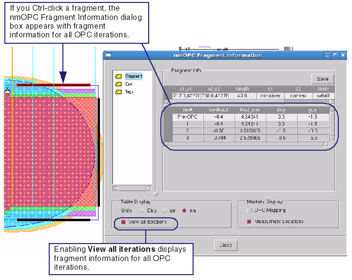

Calibre WORKbench
can present side-by-side the OPC fragmentation information of selected
iterations (for example, to inspect EPE trends).
Procedure
- Run OPC from the RET Flow Tool with the Fragment Markers option
enabled.
- Make visible the layers containing
the fragment marker layers corresponding to the desired OPC iterations.
- Click the FInfo button.
- To show information for all
iterations that were output, click “View all iterations” in the
Table Display area at the bottom of the Fragment Information dialog
box, or ctrl-click the fragment (see Figure 1).
Figure 1. Fragment Information
for All Iterations